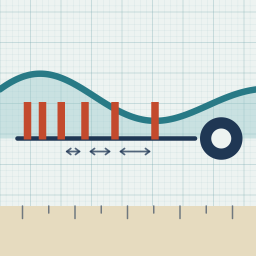

間をのばしてやめる禁煙
やめる日から逆算して、1本ごとにあける時間を毎日少しずつのばす。最初の画面に「次の1本は 10:40 から」。
いまの1日の本数・起きている時間・やめる日を入れると、やめる日まで毎日少しずつ「1本ごとにあける時間」がのびる階段ができます。港の潮見表のような画面に、きょう吸った1本（朱の印）と越えた波（青緑の丸）が並びます。
- 間をのばす階段。やめる日から逆算して、目安の本数を毎日少しずつ減らし、そのぶん1本ごとにあける時間をのばします（例：1日20本・4週間 → 48分ごとから始まり、やめる前の日は1日1本）。全部の段を表で見られます
- 次の1本の時刻。前の1本の時刻に、きょうのあける時間を足した「次の1本は ◯時◯分から（あと ◯分）」を、最初の画面のまん中に出します。その前に吸った1本は「早めの1本」、時刻を過ぎても待てた分は「のばせた分」として残ります
- 吸いたい波。吸いたくなったら「吸いたい」を押して、波が上がって下がるまで（3分。1・3・5・10分から選べます）待ちます。越えたら「波を越えた」
- きっかけの表。吸った1本と越えた波を、きっかけ（食後・コーヒー・お酒・仕事の合間 など）ごと・時間帯ごとにまとめ、いちばん手ごわいきっかけを見せます
- やめる日からは、やめてからの時間・吸わなかった本数・節約した金額・越えた波の数。始めた日・やめる日・吸った時刻はあとから直せます。値上がりしても、前の日の金額は変わりません（値段の履歴）。紙巻きでも加熱式でも「本」で数えます
- 登録・課金はありません。記録はこの端末の中だけに保存します。画面のいちばん下に小さな広告が出ます（画面いっぱいの広告・動画の広告は出しません）
このアプリは医療機器ではありません。体調に不安があるとき・禁煙の薬を使うときは、禁煙外来・医師・薬剤師に相談してください。